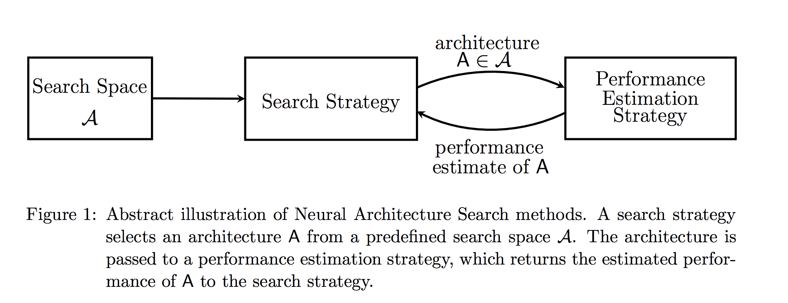
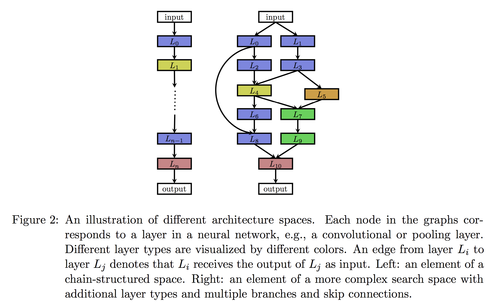
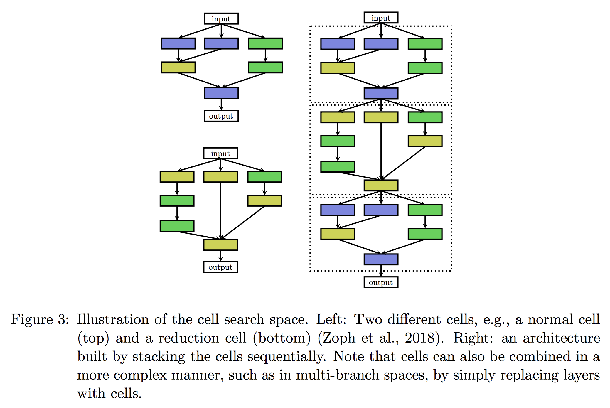

本文的内容大都译自于 [1] Thomas Elsken, Jan Hendrik Metzen, Frank Hutter 的 Paper “Neural Architecture Search: A Survey”，这篇文章很好的总结分析了 NAS 这一领域的研究进展，可以很好的帮助了解这一领域。因为本文涉及了很多不同的算法和概念，无法一一详细介绍，很多地方我也不太理解就只能直接直译，因此对于关于算法的具体过程请按照兴趣参考相关的 Paper 原文，一些主要的 Paper 在文章最后附上了链接。
1. 介绍
在过去的几年中，深度学习在很多的任务上都取得了显著的进步，诸如图像识别，语音识别，机器翻译等人工智能领域。一直以来，研究者们都在不断的探索推出新的神经网络架构，我们都知道，目前广泛流行的一些架构其实都是由人类专家们凭借经验设计出来的，懂得都知道，设计出适合的神经网络架构是一个相当耗时且易错的过程。因此，就有研究者开始思考如何是否能让程序自动的搜索出一个不错的网络架构，而这一领域被称为神经架构搜索（Neural Architecture Search）。在作者这片文章中，他们整理了该研究领域的主要工作，然后从以下三个方面对 NAS 的研究发展过程做了一个详细的介绍和总结。
- 搜索空间（Search Space）: 搜索空间定义了搜索的范围，其实就是在哪搜索。通过结合一些过去研究者架构设计方面的经验，可以通过减小搜索空间和简化搜索过程来提高搜索的性能。当然，这样同时也引入了人为的主观臆断，可能会妨碍寻找到超越当前人类知识的新的架构构建块（building blocks）。
- 搜索策略（Search strategy）：搜索策略定义的则怎样去搜索。一方面，我们希望能快速找到性能良好的架构，另一方面，也应避免过早收敛到次优架构（suboptimal architeture）区域。
- 性能评估策略（Performace estimation strategy）：NAS 的目标是希望能够自动的在给定的数据集上找到一个高性能的架构。性能评估则是指评估此性能的过程：最简单的方式是按照通常的方式对一个标准架构训练和验证来获得结果，但遗憾的是这样的计算成本太高了，并且同时限制了可以搜索的网络架构的数量。因此，最近的许多研究都集中在探索新的方法来降低这些性能评估的成本。

2. 搜索空间（Search Space）
我们先来介绍搜索空间这一部分，首先我们看看目前的一些一般的 search spaces。
图 2 左边所示的就是一个相对简单的搜索空间，称为链式神经网络（Chain-stuctured Neural Network），很简单就是一个链表，第 $i-1$ 层的输出作为第 $i$ 层的输入，可以表示为 $A = L_n \circ …L_1 \circ L_0$。而针对于这样一个 search space，我们就需要考虑这些参数：
- 网络的(最大)层数 $n$
- 每一层执行的操作类型，比如 pooling， convolution 这样的基础操作，或者更高级的一些操作，如 [2] 中提出的 depthwise separable convolutions 或 [3] 中提出的 dilated convolutions。
- 每一层与这个操作相关的 hyperparameters，比如对于一个一般的 convolutional 层来说，有 filter 的 numbers，keneral 的 size 和 strides 的 length，而对于 fully-connected 层来说就说是 units 的 number 了。
而需要注意的是，与每层相关的 hyperparameters 是取决于这一层的操作类型的，因此对于 Search Space 的参数化的结果并不是一个固定的长度（fixed-length），而是一个条件空间（conditioanl space）。

在最近的很多关于 NAS 的研究中都引入了人工设计出的如跳跃连接(skip connections)这样的架构元素，可以用来构建如图 2 右所示的复杂的多分支网络（multi-branch networks）。对于这样的结构，第 i 层的输入不再仅仅是前一层的输入，而需要表示为一个组合函数的形式 $g_i(L_{i-1}^{out},…,L_{0}^{out})$，这样的方式明显的提高了架构的自由度，多分支的架构主要有以下的几个特殊形式：
- 链式结构网络: $g_i(L_{i-1}^{out},…, L_0^{out}) = L_{i-1}^{out}$
- [4] 中的 Residual Networks: $g_i(L_{i-1}^{out},…,L_{0}^{out}) = L_{i-1}^{out} + L_j^{out}, j < i$)
- [5] 中的 DenseNets: $g_i(L_{i-1}^{out},…,L_{0}^{out}) = concat(L_{i-1}^{out},…,L_{0}^{out})$。
受到越来越多的由 repeated motifs 组成的网络架构的影响，[6, 7] 也开始提出将搜索整个架构转变为搜索这样的 motifs，他们称这些 motifs 为 cells 或 blocks。[6] 中优化出了两种不同的 cells, 一个是输出和输出维度相同的 normal cell 和 另一个用于减少空间维度（减小图片大小）的 reduction cell。然后通过图 3 中所示的预定义的方式堆叠这些 cells 来构成最终的网络模型。相比于之前，这样的 search space 有优势:
- 搜索空间的大小显著减小，例如，Zoph 2017 的研究同它 2016 成果相比，在加速了 7 倍的同时实现了更好的性能。
- 仅仅通过调整一个模型中使用的 cells 的数量，就可以很容易地将应用到其他的数据集。的确，Zoph 成功的在将 CIFAR-10 上优化过的 cells 转移到 ImageNet 时同样实现了最优的性能。[6]

因此，这种 cell-based 的 search space 也应用在了很多后来的研究中。然而，当使用基于 cell 的搜索空间时，出现了一种新的选择问题，即如何选择元架构（meta-architecture）：应该使用多少 cells 以及如何连接它们来构建实际模型？例如，Zoph 建立了一个由 cells 组成的序列模型，每个 cell 接收先前的 2 个 cell 的输出作为输入。而 [8] 中则采用一些众所周知的如 DenseNet 中的高级结构来组合 cell。原则上，cells 可以任意的组合，例如，在上述多分支空间内。就可以用 cell 来简单的替换 layers。理想情况下，Meta-architecture 也应作为 NAS 的一部分自动优化;否则，如果大多数复杂性已经由 meta-architecture 解决，那么很容易就把问题变成进行 meta-architecture engineer，这样对 Cell 的搜索就变得过于简单了。
在 meta-architecture 的优化方面，[9] 提出了一种分层搜索空间（hierarchical search space）的方法将 motfits 的搜索分成了几个不同 level，第一个 level 由 primitive operations 集合组成，第二个 level 通过连接 primitive operators 形成一个 DAG，第三个 level 则编码如何连接 level2 的 motifs，以此类推。Cell-based 的 search space 可以被视为一种分层搜索空间 level 为 3 时的特殊情况，level1 对应操作，level2 的 motifs 对应 cells，level3 则对应 meta-architecture。
Search space 的选择很大程度上就决定了这一优化问题的难度：即使对于基于单个 cell 且 meta-architecture 固定了的这样的 search space 情况而言，挑战仍然还包括 non-continuous 和 relatively high-dimensioanl（因为一般情况下更复杂的模型往往表现更好，也就导致更多的设计选择）。
我们注意到许多搜索空间中的 architecture 是可以写成固定长度 vector 的，例如在 [6] 中由两个 cells 的组成被编码成一个 40-dimentional 的 search space。 类似地，unbounded search spaces 也可以通过约束一个最大深度，从而产生具有（可能很多）条件维度的固定大小的搜索空间。
3. 搜索策略（Search Strategy）
到现在，已经有许多不同的搜索策略用于 NAS，主要有如下这些：
- 随机搜索（random search）
- 贝叶斯优化（Bayesian optimazation）
- 进化方法（evolutionaray methods）
- 强化学习（Reinforcement Learning, RL）
- 梯度方法（gradient-based methods）
自 2013 年开始，Bayesian optimazation（BO）就在 NAS 研究中取得了一些成功，基于 BO 发现了当时最优的 vison architectures，在 CIFAR-10 上取得最优 architeture，以及实现了第一个超过人类专家赢得竞赛的 automaticallytuned 神经网络。在 16 年 Google Brain 发表的 [10] 中通过强化学习的搜索策略在 CIFAR-10 和 Penn Treebank 数据集上取得很好表现后，NAS 成为机器学习社区的主流研究课题之一。虽然是通过大量的计算资源来实现这一结果（800个GPU持续三到四周），但在他们的工作之后，已经有研究者逐渐连续的发布了各种各样的方法，以降低计算成本并实现进一步的性能。
如果将 NAS 视作一个 RL 问题，神经架构的生成就可以当作是一个 agent’s action，而 action space 则就是 search space。同样 agent‘s reward 则基于 Section 4 中评估策略取得的结果。不同的 RL 方法的主要区别在于如何表示 agent’s policy 以及它们如何对它进行优化的：[10] 中使用了一个 RNN policy 生成一个编码 neural architecture 的字符串。Zoph 等人最初使用 REINFORCE policy gradient algorithm 来训练网络，但是他们在接下的 paper 中将其替换为了 Proximal Policy Optimization（PPO）。[11] 中则通过 Q-Learning 算法训练一个 policy 选择 layer’s type 和 preparameters。这些方法的另外一种观点就是作为 sequential decision processes， policy 顺序的取样生成 sample architecture，并只有在最后的 action 结束后才获得 reward。然而因为在顺序执行过程中并没有跟 environment 交互（没有观察到外部状态，也没有中间奖励），因此我们发现将 architecture sampling process 程解释为单个动作的顺序生成更直观，这样就将 RL 问题简化为了一个 stateless multi-armed bandit problem。
[8] 中提出了一个类似的方法：在他们的方法中，state 是当前的 architecture，reward 是架构性能的评估结果，action 则对应于一个 application of function-preserving mutations 的过程，称为 network morphisms。为了处理长度可变的网络架构问题，他们使用了一个双向的 LSTM 将 archiitectures 编码成固定长度的表示。基于该编码表示，actor networks 决定了 sampled action。将这两个组件组合在一起当作使用 REINFORCE policy gradient algorithm 端到端训练的 policy。我们注意到这种方法不会两次访问相同的 architecture，所以需要从 policy 中对 architecture space 进行 strong generalization。（注：因为对这些并不了解，这一块请参照 paper [8]）
使用 RL 的一种替代方案是使用进化算法来优化神经结构的 neuro-evolutionary 方法。 我们所知道的第一种用进化算法设计神经网络的方法可追溯到三十年前：Miller等人（1989）使用遗传算法生成架构并使用反向传播算法来优化其权重。自那时起，许多神经进化方法使用遗传算法来优化神经结构及其权重；然而，当扩展到用于监督学习任务具有数百万权重的神经架构时，基于 SGD 的权重优化方法更优于进化算法的方法。但是更近期的一些研究中有使用基于梯度的方法来优化权重，而使用进化算法来优化神经结构本身。是用进化算法演化一组模型，在每个进化步骤中，对来自群体的至少一个模型进行采样，并将它们作为父母通过繁衍或者突变来产生后代。在 NAS 中，突变表示本地化的操作，例如添加或移除层，改变层的超参数，添加跳跃连接，以及改变训练超参数。在对后代进行训练之后，评估它们的适应性（例如，在验证集上的表现）后再将它们添加到种群中。
Neuro-evolutionary 在如何对父母进行抽样，更新种群和产生后代方面存在不同的方法，例如有些研究中是用 tournament selection (Goldberg and Deb, 1991) 来抽样父母的，而 [12] 中使用一个 inverse density 从 multi-objective Pareto front 中取样父母。[13] 从种群中移除最差的个体，而 [14] 中发现去除的最老的个体是其实有益的，[9] 则根本不删除个体。为了繁衍后代，大多数的方法都是随机初始化子网络，而 [15] 使用了 Lamarckian inheritance，即知识（learned weights）通过使用 network morphisms 传递给子女。[13] 中也让后代继承父母的所有参数，且这些参数不受突变的影响；虽然这种继承不是严格的 function-preserving，但与随机初始化相比，它们可以加速学习的过程。此外，它们还允许改变学习速率，这可以被视为一种在 NAS 期间优化学习速率调度的方式。
[13] 中进行了一项比较 RL，进化方法和随机搜索（RL）的案例研究，得出的结论是 RL 和进化算法在最终在测试精度方面表现都很出色，进化具有更好的 anytime performance 并且可以找到更小的模型。两种方法在实验中表现始终优于 RS，但是幅度很小：RS 在 CIFAR-10 上实现了约 4％ 的测试误差，而 RL 和进化达到约 3.5％（在“data augmentation”之后，其中深度和过滤器数量增加;与非增强搜索空间的差异约为 2％）。在 [16] 的结论中这个差异就更小，他们报告 CIFAR-10 的测试误差为 3.9％，ImageNet的 RS 测试误差为 21.0％，而基于进化的方法分别为 3.75 ％和 20.3％。
贝叶斯优化（BO）是用于 hyperparameters 优化中最流行的方法，但是由于 typical BO toolboxes 是基于高斯过程且主要集中于低维连续性优化问题，所以它并没有被很多组应用于 NAS 中。[17] 中派生了 kennel function 来使用基于 GP 的 BO 方法，但还没有实现过最优的结果。相比之下，一些研究中使用基于树的模型或随机森林来搜索非常高维的条件空间时实现了在很多问题上的最优性能，这些方法同时优化神经架构和它们的 hyperparameters。虽然缺乏完整的比较，但初步证据表明这些方法可以超过进化算法 [18]。
同时，还有些研究者使用 hierarchical manner 的方式探索 architecture search space，比如结合进化算法或者通过 sequential model-based optimization。[19] 中也选择使用 Monte Carlo Tree 来进行搜索。[15] 中提出了一种简单但性能良好的 hill climbing 算法，朝着性能更好的架构方向移动而并不需要更复杂的探索机制来发现高质量的架构。
与上面的 gradient-free 优化方法相比，[20] 提出了一种搜索空间的 continuous relaxation 来实现基于梯度的优化：它并不不是 fix 某一层的单个操作 $O_i$ 来让它执行，而是从一组操作 ${O_1,,,O_m}$ 中计算一个 convex combination。更具体的说，给定一个输入层 $x$，输出层 $y$ 通过计算 $y = \sum_{i=1}^{m} \lambda_io_i, \lambda_i \geq 0, \sum_{i=1}^{m}\lambda_i = 1$，其中系数 $\lambda_i$ 用于参数化网络架构。然后通过修改 gradient descent steps 来优化网络权重和网络架构。最后通过为每一层选择一个操作 $i$，$i = arggmax_i \lambda_i$。同时 [21] 中也采用基于梯度的神经架构优化方法，但他们只考虑了优化每层的超参数或连接方式。
4. 性能评估策略（Performace Estimation Strategy）
上一节讨论的搜索策略旨在找到某些性能度量（如准确度）最大化的架构 A，为了引导它们的搜索过程，这些策略需要考虑如何评判给定架构的性能高低。最简单的方法是在训练数据上训练 A 并评估其在验证数据上的表现。然而，从头开始训练每个要评估的架构经常会产生大约数千 GPU 天的计算需求。
为了减少这样的计算量，可以基于完全训练之后的实际性能的 lower fidelities 来估计性能（也表示为 proxy metrics）。这种 lower fidelities 可以表示为较短的训练时间，对训练子集的训练，使用较低分辨率的图像，或者是用更少的 filter。虽然这些 lower fidelities 降低了计算成本，但与此同时它们也会在测试中引入偏差，因为性能通常会被低估。当然只要搜索策略只依赖于相对排名时，这不会有什么问题。然而，最近的一些结果表明当 lower fidelities 与“完全”评估之间的差异太大时，这种相对排名就会发生显着变化，有研究表明 fidelities 是会逐渐的增长的。
另外一种方式是将评估建立在 learning curve extrapolation 上。[21] 提出方法来推断初始学习曲线并终止那些预测表现不佳以加速架构搜索过程。另外一些研究者则通过基于架构的超参数来预测哪些部分学习曲线最有希望。[16] 中还提出了训练用于预测新架构性能的替代模型，他们不采用学习曲线外推法，而是支持基于架构或 Cell 来预测其性能，并以此推断出比训练期间看到的尺寸更大的架构/Cell。目前预测神经架构性能的主要挑战是：为了加快搜索过程，需要在相对较少的评估的基础上并在相对较大的搜索空间中进行良好的预测。
加速性能评估的另一种方法是基于之前已经训练过的其他架构的权重来初始化新架构的权重。实现这一目标的一种方法，称为 network morphisms，它允许修改架构的同时保持网络所代表的功能不变。这就允许连续的增加网络容量并保持高性能而无需从头开始训练。对几个时期的持续训练也可以利用 network morphisms 引入额外容量。这些方法的一个优点是它们允许搜索空间没有固有的架构大小上限，另一方面，strict network morphisms 只能使架构更大，从而可能导致过于复杂的架构。当然这可以通过采用允许缩小架构的 approximate network morphisms 方法来衰减。
One-shot architecture search 是另外一种加速评估的方法，它将所有架构都视为一个超级图的不同子图，并在架构之间共享权重。那么只需要一次性训练单个模型的权重，然后通过继承权重来评估架构（它们只是一次性模型的子图），而无需再进行任何单独的训练。这无疑大大加快了架构的性能评估，因为后面的都不需要训练（仅需评估验证数据的性能）。从理解上这种方法通常会产生很大的偏差，因为它严重低估了架构的实际性能。然而，它可靠地对架构进行排序，因为有研究表明估计的性能其实与实际性能是密切相关的。不同的 one-shot NAS 方法在 one-shot moel 上的训练方式都有所不同：ENAS（Pham等，2018）通过训练了一个 RNN 控制器从搜索空间中采样架构，并基于 REINFORCE 获得近似梯度训练 one-shot 模型。 而 DARTS 通过在 one-shot model 的每个边缘上放置候选操作的混合集而获得的搜索空间的连续松弛来 one-shot model 的所有权重，并且表明这是足够的。虽然 ENAS 和 DARTS 在训练期间优化了架构上的分布，但 Bender 等人的方法则可以看作使用固定分布，这样的方法可获得的高性能。有研究表明，重量分配和固定（精心选择）分布的组合可能是 one-shot NAS 的唯一必需成分。与这些方法相关的是 meta-learning of hypernetworks，它为新架构产生权重，因此只需要训练 hypernetworks 而不是架构本身。它的主要区别在于权重不是严格共享的，而是由共享的超网络生成（以采样架构为条件）。
One-shot NAS 方法的一般限制是超级图已经定义好了先验条件并将搜索空间限制为其子图。此外，在架构搜索期间要求整个超图驻留在 GPU 存储器中的方法将相应地限于相对较小的超图和搜索空间，因此它通常与基于 Cell 的搜索空间结合使用。虽然基于权重共享的方法已经大大减少了 NAS 所需的计算资源（从数千天到几天的GPU天数），但目前尚不清楚如果架构的采样分布与一次性模型一起优化，它们会在搜索中引入哪些偏差。例如，某些部分的初始偏差可能会导致一次性模型的权重更好地适应一些架构，这反过来则会加大这部分搜索空间的偏差。同样这可能也会导致 NAS 过早收敛，同时这可能也是固定采样分布的一个优点。总的来说，对不同性能估计器所引入的偏差进行系统的分析将是未来研究的一个方向。
未来的方向
这一部分，将主要介绍有关 NAS 在当前或未来研究的若干方向。目前大多数相关的研究都集中在用于图像分类的 NAS 上。一方面，这提供了一个具有挑战性的 benchmark，因为当前的许多手动工程都专门在寻找在该领域表现良好且不易被 NAS 超越的架构。而另一方面，利用手工工程的经验定义一个合适的搜索空间是相对容易的，这反过来也就使得 NAS 不太可能找到大大优于现有架构的架构，因为 search 出的架构并不能从根本上产生区别。因此，我们认为通过将 NAS 应用于超越图像分类较少被探索的领域非常重要。这方面值得注意的一些方面是将 NAS 应用于语言建模，音乐建模，图像恢复和网络压缩，同时应用于 RL，GAN，语义分割（semantic segmentation）或传感器融合（sensor fusion）也可能是未来的进一步发展方向。
另一个方向是开发用于多任务（multi-task）问题和多目标（multi-object）问题的 NAS 方法。 同样，扩展 RL/bandit 方法的 policy 也将是很有趣的。此外，应用 NAS 来搜索对抗性更强大的架构是一个有趣的近期方向。
与此相关的另一个方向是如何定义更通用和灵活的搜索空间。例如，虽然 cell-based 的搜索空间在不同的图像分类任务之间可以提供高可转移性，但它主要是基于人类在图像分类方面的经验，并且不容易推广到其他领域（例如，语义分割或对象检测）。因此，允许表示和识别更一般架构的分层结构搜索空间将使 NAS 更广泛地适用。此外一般的搜索空间都是基于预先定义好的 building blocks，如不同类型的 convolutions 和 pooling，这并不能在这一层次上识别出新的 building blocks，假设如果能超越这样的限制则将可能大大增加 NAS 的能力。
同时不同的 NAS 方法之间的优劣比较是非常难的，因为架构的性能衡量除了架构本身之外还取决于许多其他的因素。虽然大多数的研究者们都报告了在 CIFAR10 上的结果，但是他们的实验往往在 search space，computational budget, data augmentation, training procedures, regularization 以及其他因素方面都存在很大的差异。例如对于 CIFAR10 数据集，当使用 cosine annealing learning rate schedule 以及通过 MixUp 或者 ShakeShake regularization 或者 scheduled drop-path 这些处理方式时，性能会显著提高。因此可以想像，同 NAS 探索出的新架构相比，这些成分对于报告中的结果的影响可能更大。因此，我们认为一个共同基准的定义对于比较不同的 NAS 方法至关重要。[18] 中定义了一个用于联合 architecture 和 hyperparameter search 的 benchmark。在这个 benchmark 中，需要优化 architecture 和 regularization/optimization 涉及的 9 个参数。然而，与大多数 NAS 方法所采用的空间相比，这个搜索空间过于简单了。
尽管 NAS 在目前某些方面已经取得的令人瞩目的性能，但是到目前为止依旧很难解释为什么某些架构可以达到很好的效果？因此理解为什么某些 motifs 可以取得好的性能以及是否可以将这些 motifs 派生到其他不同问题这些方面是很有必要的。
相关 Paper 列表
【01】Neural Architecture Search: A survey, 2018
【02】Xception: Deep Learning with Depthwise Separable Convolutions, 2016
【03】Multi-Scale Context Aggregation by Dilated Convolutions, 2016
【04】Deep Residual Learning for Image Recognition, 2016
【05】Densely Connected Convolutional Networks, 2016
【06】Learning Transferable Architectures for Scalable Image Recognition, 2017
【07】Practical Block-wise Neural Network Architecture Generation, 2018
【08】Path-Level Network Transformation for Efficient Architecture Search, 2018
【09】Hierarchical Representations for Efficient Architecture Search, 2017
【10】Neural Architecture Search with Reinforcement Learning, 2016
【11】Designing Neural Network Architectures using Reinforcement Learning, 2016
【12】Efficient Multi-objective Neural Architecture Search via Lamarckian Evolution,2018
【13】Large-Scale Evolution of Image Classifiers, 2017
【14】Regularized Evolution for Image Classifier Architecture Search, 2017
【15】Simple And Efficient Architecture Search for Convolutional Neural Networks, 2018
【16】Progressive Neural Architecture Search, 2017
【17】Neural Architecture Search with Bayesian Optimisation and Optimal Transport, 2018
【18】Towards Reproducible Neural Architecture and Hyperparameter Search, 2018
【19】Finding Competitive Network Architectures Within a Day Using UCT, 2017
【20】Darts: Differentiable architecture search, 2018
【21】MaskConnect: Connectivity Learning by Gradient Descent, 2018
【22】Speeding up automatic hyperparameter optimization of deep neural networks by extrapolation of learning curves, 2015